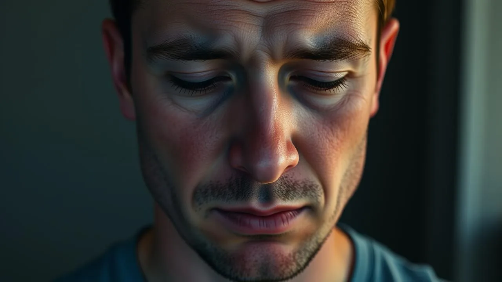

Signs of mental exhaustion may be the words you use when everyday activities feel harder. Start by describing the change rather than deciding what caused it.
Sleeping for a particular number of hours cannot distinguish mental exhaustion from another explanation for fatigue. Persistent or unexplained tiredness deserves an individual discussion.
This guide offers five areas to describe when asking for support. They organise your account without creating a score or telling you which condition you have.
Signs of mental exhaustion are descriptions, not a diagnosis. Explain changes in energy, concentration, sleep, mood and daily functioning, and seek suitable advice when concerns persist or affect ordinary life rather than assuming stress explains everything.
What does mental exhaustion describe?

Mental exhaustion is a phrase people use for feeling depleted or struggling with demands. It does not identify a specific medical cause, so use concrete examples when explaining what has become difficult.
- Name the activity affected.
- Describe the change in your own words.
- Avoid a fuel-tank explanation for symptoms.
What are the signs that deserve a conversation?
NHS guidance recommends advice for ongoing unexplained tiredness or fatigue that affects daily life. You can ask for help before a diary is complete, and other symptoms should be discussed rather than attributed automatically to stress.
- Mention when the change began.
- Describe its effect on ordinary responsibilities.
- Ask sooner when a concern needs prompt attention.
Why does a symptom count fail to explain the cause?
The same description can occur in different circumstances. A checklist cannot separate possible health concerns from practical demands, so keep both questions open instead of counting signs to confirm an explanation.
- A symptom is information, not proof of a cause.
- Time in bed does not establish sleep quality or rule out illness.
- A desire for time away does not diagnose exhaustion.
How can five areas help you describe the change?
These five areas are prompts for a conversation. You do not need to experience all of them or monitor yourself repeatedly. Choose what accurately describes your situation.
- 1. Energy. Describe what tiredness prevents or changes. Avoid deciding that it must be mental rather than physical because you allowed time for sleep.
- 2. Concentration. Give an example of a task that has become harder to follow. Explain the change without inferring a brain mechanism.
- 3. Sleep. Mention difficulty settling, waking or daytime sleepiness when relevant. A clinician can decide which details need further assessment.
- 4. Mood. Describe changes you have noticed without assuming they prove burnout. Include concerns you find hard to cope with when seeking help.
- 5. Daily functioning. Identify an ordinary task, care responsibility or social activity affected. This makes the support need clearer than a severity score.
How can you manage the next support step daily?
After asking for advice, follow the agreed next step and mention changes that matter. Keep notes proportionate; they should support communication rather than become another compulsory performance task.
- Keep essential needs visible while seeking support.
- Ask what to do if the situation changes.
- Avoid stopping medicines or choosing supplements from a symptom list.
Activity-impact note: What changed ____. Approximate onset ____. Activity affected ____. Other symptoms or relevant changes ____. Support question ____. Person to contact ____. The note is optional and does not establish a diagnosis.
For a related next step, consider understanding the occupational distinction, preparing questions about ongoing fatigue, raising a specific work demand.
An Illustrative Scenario
Fictional example: Someone keeps losing track of household tasks and feels persistently tired. They write down one example and arrange advice rather than deciding the problem must be stress. Start with what changed instead of searching for a score that confirms it.
They can also ask a household member about sharing a task while seeking assessment. This example does not show that sharing work resolves the symptoms. Review both practical support and the professional advice received.
Frequently Asked Questions
Choose One Small Next Step
You can describe a difficult change without explaining its cause. A concrete example is a useful place to begin.
Support does not require proving that you have reached a limit. Ask when something is persistent, concerning or affecting life.
Choose one activity that has become harder and note the question it raises today. Let that support a conversation rather than a self-diagnosis.
Sources and Scope
NHS fatigue guidance supports seeking advice about persistent unexplained tiredness and daily-life impact. The five areas and activity-impact note are editorial prompts; they do not validate a mental-exhaustion diagnosis or a symptom score.
Written by the NicheHubPro Editorial Team. Read our editorial policy.
This article is for informational purposes only and does not replace professional medical advice.